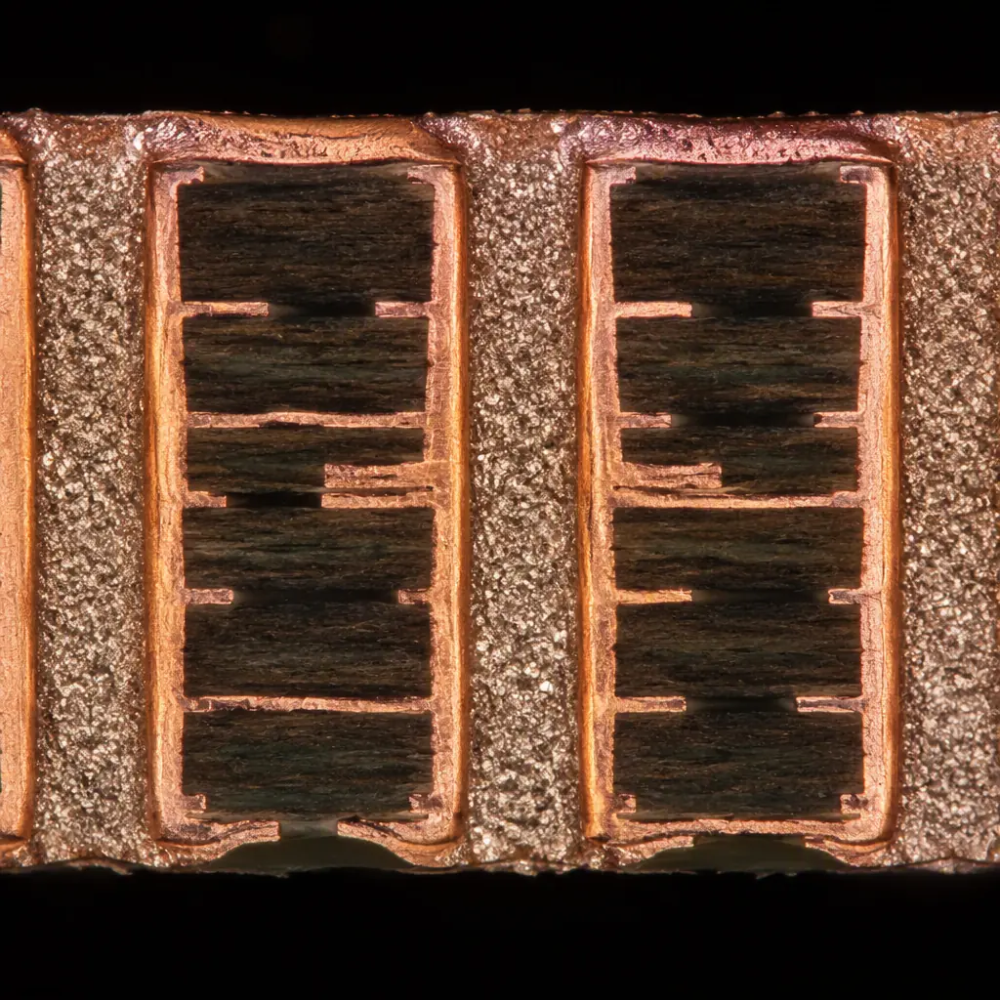

Heat is the number one reliability killer in electronics. For every 10°C rise in junction temperature, semiconductor lifetime halves — this is the Arrhenius equation in practice. And in modern PCB design, where GaN power transistors switch at megahertz frequencies inside shrinking enclosures, thermal management is not an afterthought. It is the difference between a 10-year product and a 6-month field return. This guide covers the four thermal management strategies available to PCB designers and what each one demands from your PCB manufacturer — from thermal via geometry to substrate bonding to post-assembly heat sink attachment.
At Huaxing PCBA, we manufacture thermally managed PCBs across the full substrate spectrum — standard FR-4 with thermal via arrays, metal-core PCBs (MCPCB) with aluminum or copper base, and heavy copper boards up to 20 oz for power distribution. Our thermal manufacturing capabilities include controlled-depth drilling for buried thermal vias, solder-mask-defined thermal pads with ±0.05mm registration, and automated thermal impedance testing on every production lot.

The Physics of PCB Heat Transfer: Why Plane Copper Isn't Enough
FR-4 has a thermal conductivity of approximately 0.3 W/m·K — roughly 1,300 times worse than copper (385 W/m·K). This means a bare FR-4 board with no thermal management will trap heat at component junctions, with temperature rising until convection and radiation balance the power dissipation. For a typical power MOSFET dissipating 2W in still air on a 4-layer FR-4 board, junction temperature can exceed 125°C within minutes without thermal management.
The solution is to create a low-resistance thermal path from the component junction to ambient. Every thermal management strategy accomplishes the same thing — reduce the total thermal resistance (RθJA, junction-to-ambient) — but through different physical mechanisms:
| Strategy | RθJA Reduction | Cost Impact | Manufacturing Complexity |
|---|---|---|---|
| Copper pours + thermal vias | 15–30% | Minimal (+2–5%) | Low — standard process |
| Metal-core substrate (Al/Cu) | 40–60% | Moderate (+15–30%) | Medium — single-sided primarily |
| Heavy copper (4–20 oz) | 20–40% | Moderate (+10–25%) | Medium — etching/drilling adjustments |
| External heat sink (bonded) | 50–80% | Significant (+25–50%) | High — post-assembly bonding |
| Active cooling (fan/fluidic) | 70–90% | High (+40–100%) | High — system integration |
Key Takeaway: Thermal management is not a single decision — it is a stack. Start with copper pours and thermal vias (essentially free in PCB manufacturing cost), add substrate enhancement if needed, and only escalate to external heat sinks or active cooling when the thermal budget genuinely cannot be met otherwise. Most designs that jump straight to expensive bonded heat sinks are leaving 20–40% of thermal performance unused because the via array under the component was poorly designed.
Thermal Via Arrays: The Highest ROI Thermal Strategy
Thermal vias are plated through-holes placed under a hot component's thermal pad that conduct heat vertically from the top copper layer to inner planes and the bottom layer. A well-designed thermal via array costs nothing extra in PCB manufacturing but can reduce junction temperature by 15–30°C compared to a board with no vias under the thermal pad. Here is how to design them correctly:
Via Geometry: Smaller Diameter, Tighter Pitch = Better Performance
The thermal resistance of a single via is determined by its copper barrel cross-sectional area. But more vias in a given area always outperform fewer large vias, because the limiting factor is the lateral spreading resistance in the copper plane — not the via itself. Use 0.3mm diameter vias at 0.8–1.0mm pitch (center-to-center). A 5×5 array of 0.3mm vias has ~4× lower thermal resistance than a 3×3 array of 0.5mm vias in the same footprint area. Avoid via-in-pad if solder wicking is a concern — use capped and filled vias (IPC-4761 Type VII) if via-in-pad is unavoidable. Our PCB via technology guide covers all via types and their manufacturing requirements.
Plane Connectivity: Every Via Must Connect to a Solid Copper Plane
Thermal vias that connect only to thin signal traces provide almost no thermal benefit — the heat reaches the via barrel but has nowhere to go. Every thermal via must connect to a continuous copper plane on at least one inner layer, with that plane having a direct thermal path to the board edge, a connector, or an external heat sink. The copper plane itself should be at least 1 oz (35µm) — 2 oz (70µm) is recommended for power electronics. Thermal relief spokes on plane connections defeat the purpose: use direct connects (no thermal reliefs) on all thermal vias. Check our heavy copper PCB guide for when to upgrade beyond standard copper weights.
Solder Mask Opening: Define the Thermal Pad Precisely
The top-layer copper pad under the component's thermal slug must have a solder-mask-defined (SMD) opening that matches the component datasheet's recommended land pattern within ±0.05mm. Too large an opening = solder paste spreads and creates voids under the thermal pad. Too small = insufficient solder contact area for heat transfer. Specify NSMD (non-solder-mask-defined) pads whenever possible — the copper pad size defines the solderable area, providing more consistent solder wetting and fewer voids. After reflow, X-ray inspection should show void content < 25% of the thermal pad area; for automotive power modules, demand < 10% void content. Our AOI/X-ray/SPI inspection guide explains the verification methods.
Via Filling and Capping: When Standard Vias Aren't Enough
Open vias under a component thermal pad create two problems: solder wicking down the barrel (starving the joint) and trapped flux residues that cause long-term corrosion. For high-reliability designs, specify IPC-4761 Type VII — filled and capped vias. The via barrel is filled with non-conductive epoxy, planarized, and then plated over — creating a flat surface that prevents solder wicking. This adds approximately $0.50–1.00/board for typical via counts but is mandatory for QFN/BGA thermal pads in automotive and aerospace applications. Our IPC Class 2 vs Class 3 guide details when filled vias become a requirement rather than an option.

Substrate Selection: When to Move Beyond FR-4
FR-4 with optimized thermal vias handles most applications up to ~5W per component. Beyond that, the thermal resistance of FR-4 itself becomes the bottleneck, and substrate selection is the next lever to pull. Three alternatives dominate thermally managed PCBs:
Metal-Core PCB (MCPCB) — Aluminum Base for LED and Power
MCPCB replaces the bottom FR-4 layers with a solid aluminum or copper plate (0.8–3.2mm thick), separated from the copper circuit layer by a thin dielectric with high thermal conductivity (1–8 W/m·K vs FR-4's 0.3). This creates a direct thermal path from component → dielectric → metal plate → ambient. Aluminum-base MCPCBs are standard for LED lighting applications; copper-base provides 2× the thermal performance at 3× the cost and is used for IGBT modules and RF power amplifiers. MCPCBs are primarily single-sided — multilayer MCPCBs exist but are exotic and expensive. See our MCPCB guide for substrate selection and dielectric options.
Heavy Copper PCB — 4–20 oz for Power Distribution and Heat Spreading
Increasing copper weight from the standard 1 oz (35µm) to 4 oz (140µm) or higher turns the copper planes into effective heat spreaders. At 6 oz (210µm), a 50mm × 50mm copper plane has lateral thermal resistance low enough to spread heat from a 10mm hotspot across the entire area, dropping the effective Rθ by 50–70%. Heavy copper also handles high current directly, eliminating separate bus bars. The trade-off: minimum trace/space increases (0.2mm/0.2mm at 4 oz, 0.4mm/0.4mm at 10 oz), and via aspect ratios tighten because thicker copper leaves less room for plating. Our heavy copper PCB guide has the full design rules.
Ceramic Substrates — Alumina and AlN for Extreme Environments
For applications where FR-4 and even MCPCB cannot survive — 200°C+ ambient, high voltage with tight creepage, or radiation environments — ceramic substrates (Al₂O₃ alumina at 20–30 W/m·K, AlN aluminum nitride at 170–230 W/m·K) provide thermal conductivity approaching pure aluminum. These are used for downhole drilling electronics, satellite power modules, and semiconductor test interface boards. Manufacturing requires thick-film or thin-film deposition rather than etching — a completely different process from standard PCB fabrication. Our advanced substrate comparison guide covers the trade-offs between ceramic, PTFE, and polyimide.
Heat Sink Attachment: Bonding Methods and Manufacturing Requirements
When the PCB's internal thermal path is fully optimized and still insufficient, an external heat sink provides the final thermal resistance reduction. The attachment method determines both thermal performance and manufacturing complexity:
| Attachment Method | Thermal Resistance (TIM) | Reworkable? | Process | Best For |
|---|---|---|---|---|
| Thermal grease + mechanical clip | 0.05–0.15 K·cm²/W | Yes — clean and reapply | Manual dispense, clip attach | Prototypes, serviceable products |
| Thermally conductive adhesive | 0.20–0.60 K·cm²/W | No — permanent bond | Automated dispense, cure 100–150°C/30min | High-volume, no mechanical retention |
| Phase-change material (PCM) | 0.03–0.08 K·cm²/W | Yes — heat to release | Pre-applied pad, reflow activation | Automated assembly with high thermal demand |
| Solder-bonded heat sink | 0.01–0.03 K·cm²/W | No — desolder only | Reflow or selective soldering | Maximum thermal performance, permanent |
| Gap pad (compressible) | 0.30–1.00 K·cm²/W | Yes — replace pad | Manual placement, compression fit | Variable-height stacks, multi-component |
For PCB manufacturers offering turnkey assembly, heat sink attachment can be integrated into the production line. At Huaxing PCBA, we support automated thermal adhesive dispensing with optical alignment verification, phase-change material placement with placement force monitoring, and post-attachment thermal impedance testing using the transient dual-interface method (TDIM) per JEDEC JESD51-14.
Thermal Simulation: Don't Guess — Model Before You Manufacture
Thermal simulation has become accessible enough that no power electronics PCB should go to manufacturing without at least a static thermal analysis. Modern tools range from free (KiCad + FreeCAD + OpenFOAM plugin, approximately 2–4 hours setup) to integrated (ANSYS Icepak, Siemens Flotherm, approximately $15K+/year).
Start with 2D Plane Analysis Before 3D CFD
A 2D static analysis that models the PCB as thermal resistances — copper planes as low-resistance lateral spreaders, FR-4 as vertical resistance — identifies hotspots and tells you whether thermal vias or substrate changes will help. This takes minutes and requires only layer stackup and component power dissipation data. Only escalate to 3D CFD (computational fluid dynamics) when natural or forced convection is the dominant cooling mechanism and airflow patterns matter.
Validate with Thermal Imaging on First Articles
Thermal simulation is an approximation — actual PCB copper distribution (fills, thieving patterns, plane splits) and manufacturing variations (dielectric thickness tolerance ±10%, copper thickness variation) create differences between simulated and actual temperatures of 5–15°C. Always validate with a thermal camera (FLIR or equivalent, ±2°C accuracy) on first-article boards running at full power. Compare hot-spot locations and temperatures to the simulation; discrepancy >15°C means the simulation model missed something (unexpected current crowding, a missed thermal path, or incorrect boundary conditions).
Procurement Insight: Ask your PCB supplier for cross-section micrographs of their thermal via plating — specifically the copper barrel thickness at the mid-point of the via. IPC Class 2 requires only 20µm average barrel thickness; but thermal vias need 25µm minimum for reliable heat conduction across multiple reflow cycles. A via barrel that thins to 15µm at the mid-point will develop cracks after 500 thermal cycles, and your simulation won't catch it because the model assumes a uniform barrel.
Thermal Management by Application: What Works Where
| Application | Typical Power | Recommended Strategy | PCB Requirements |
|---|---|---|---|
| LED Lighting (COB/module) | 10–50W per module | Aluminum MCPCB + thermal vias | 1.6–2.0mm Al base, 2–3 W/m·K dielectric |
| DC-DC Converter (50–500W) | 3–10W per MOSFET | 4-layer FR-4, 3 oz Cu, thermal via array | 0.3mm vias, 0.8mm pitch, direct plane connect |
| On-Board Charger (3.3–22kW) | 15–50W per IGBT/SiC | Heavy copper (4–6 oz) + bonded Al heat sink | 8–12 layers, ceramic-filled TIM, HiPot 3kV |
| Automotive ECU (engine bay) | 5–15W total | Thermal vias to chassis-ground plane | FR-4 Tg170+, conformal coating, –40/+125°C cycling |
| RF Power Amplifier (base station) | 30–100W per PA | Copper-core MCPCB or coin-attach | Copper coin press-fit, solder-bonded, <0.2 K/W |
| BMS Cell Monitor (EV pack) | 2–6W passive balancing | Thermal via array to inner plane | 4 layers, 2 oz Cu, direct connects, no thermal relief |
Design Rules for Thermally Optimized PCBs
These rules are independent of which thermal strategy you choose — they apply to any PCB that generates more than 1W in a concentrated area:
Solid Copper Fills on Unused Layers — Not Hatched
Hatched copper fills reduce thermal conductivity by 70–90% compared to solid fills. Always use solid copper pours on inner layers that serve as heat spreaders — the minor improvement in board flatness from hatched fills is not worth the thermal penalty. If warpage is a concern, balance copper distribution across the stackup symmetrically, but keep the fills solid. Our stackup design guide covers balanced copper distribution.
Don't Fragment the Thermal Plane with Signal Traces
A thermal plane cut into islands by dense signal routing becomes multiple small heat spreaders instead of one large one. Route signals on dedicated signal layers and keep the thermal plane (typically layer 2 or layer N-1) as contiguous as possible. If signals must cross the thermal plane, use the shortest perpendicular crossing to minimize the interruption.
Place High-Power Components Near Board Edge or Connectors
The copper plane has a finite ability to spread heat laterally — placing a 10W component in the center of a large board means the heat travels through the entire plane before reaching the edge. Components placed near the board edge have a shorter thermal path and benefit from edge convection. If edge placement is not possible, add a thermal connector or mounting hole near the hot component to create a deliberate thermal exit path.
Summary: Thermal Management Is Manufacturing, Not Just Design
Thermal management decisions made during PCB design — via diameter, plane copper weight, substrate selection — become physical constraints during manufacturing that determine whether the thermal targets are actually met. A 0.3mm via specified at 1.0mm pitch that the fabricator drills at 1.2mm pitch due to registration tolerance will have 30% fewer vias under the thermal pad, proportionally reducing thermal performance. This is why thermal management is not just a design exercise — it requires a manufacturing partner that can hold the tolerances.
At Huaxing PCBA, we manufacture thermally managed PCBs across the full technology spectrum: standard FR-4 with thermal via arrays, MCPCB with aluminum and copper base, heavy copper up to 20 oz, and hybrid stacks combining multiple substrate types. Our process includes automated thermal via inspection, cross-section analysis of via barrel thickness, and thermal impedance testing per JEDEC standards. Read our heavy copper PCB guide for high-current thermal designs, or send us your thermal management requirements for a DFM review within 24 hours.